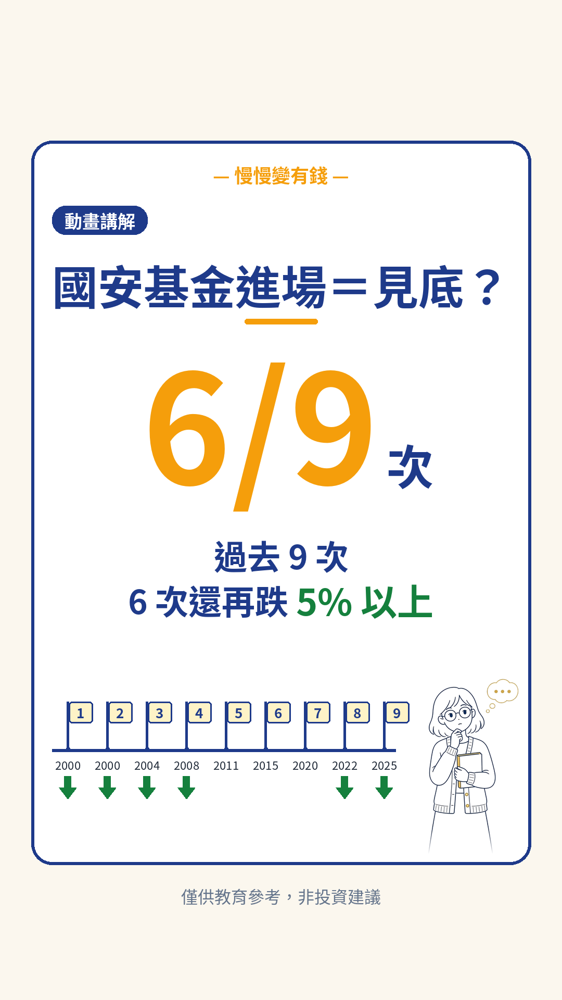

如果你這兩週盯著台股，心裡一直轉著「國安基金都進場了，應該見底了吧」，這很正常。跌得又急又深的時候，人會想抓住一個看起來很確定的訊號。先停一下：這篇不猜下一根 K 線，也不叫你買或賣。只把過去幾次「宣布進場」之後，指數實際怎麼走，攤開來看。
宣布之後，指數還可以再低
11 月 6 日下午 2 點 30 分，國安基金召開第 131 次臨時委員會，授權執行秘書視情況動用資金。會上的背景是：11 月 2 日到 6 日跌了 5,510 點、周跌 12.19%；當天盤中最低 37,837，收在 39,701.64，距離年內高點 49,968 跌了 20.55%。
宣布後第一個交易日（11 月 9 日）大漲 1,960.06 點、漲幅 4.94%，收 41,661.70；11 月 11 日又收到 44,257.15。連續幾天往上，很容易把「有人可以護盤」聽成「低點過了」。
再看到 11 月 20 日：收盤 36,033.29，比 11 月 6 日收盤再低約 9.2%；盤中最低 35,738.68，較基準再低 10.0%，也跌破 11 月 6 日的盤中低點 37,837。這段單日和單周怎麼跌，可以對照11/20 這波大跌。可運用資金上限是 5,000 億元，那是天花板，不是宣布當天就全數買進；這次實際動用多少，官方還沒有公布。基金的角色可以先看國安基金是什麼。
授權進場 ≠ 價格見底
過去 9 次，6 次還再跌超過 5%
比較用的基準，是宣布日的加權指數收盤；2008 年用 9 月 18 日。「之後最低」是基準日之後 6 個月裡的盤中最低，「半年後」是日曆同一天的收盤，碰到休市就順延到下一個交易日。若改用次日開盤或次日收盤當起點，點位會不一樣，下面全部對齊宣布日收盤。
前 9 次裡，有 6 次在宣布之後，指數還再跌超過 5%：2000 年 3 月 −17.6%、2000 年 10 月 −24.4%、2004 年 −10.3%、2008 年金融海嘯 −29.9%、2022 年 −9.5%（約 3 個半月後才見低）、2025 年隔天盤中 −6.2%，隔天收盤 −5.79%。用收盤來看，這 6 次同樣超過 5%。另外 3 次，2011、2015、2020，宣布前後一天之內就是波段低點。
- 6 次再跌超過 5%
- 3 次前後即低點
也有剛好落在低點附近
兩種都發生過，宣布當天分不出來。2011 年 12 月 20 日之後的 6 個月，指數沒有再跌破宣布日收盤 6,662.64，波段低點在前一天盤中的 6,609。2015 年 8 月 25 日隔天盤中 7,547.61，只比基準再低 1.7%，波段低點在前一天盤中的 7,203。2020 年 3 月 19 日當天盤中 8,523.63 就是波段低點；之後 6 個月內的最低 8,750，反而比宣布日收盤高 0.8%。
事後才看得清楚：2020 年半年後比宣布日高 47.4%，2008 年半年後仍低 10.5%。同一句「進場護盤」，後面的路可以差很遠。
- 2000/3再跌 17.6%
- 2000/10再跌 24.4%
- 2004再跌 10.3%
- 2008再跌 29.9%
- 2011前後一天即低點
- 2015前後一天即低點
- 2020前後一天即低點
- 2022再跌 9.5%
- 2025再跌 6.2%
半年後：6 次較高，3 次更低
拉到半年後，前 9 次裡 6 次比宣布日收盤高、3 次更低。更低的是 2000 年那兩次，以及 2008 年。2000 年那一波後來沒有停在「半年」：到 2001 年 9 月 26 日，盤中來到 3,411.68，比第 2 次基準 6,024 再低約 43%。多數時候半年後比較高，不是保證，也不能讀成再等半年就會賺回來。
兩端差很大。2008 年宣布後 1 個月 −12.6%、3 個月 −16.8%，半年仍 −10.5%。2020 年則是 1 個月 +22.0%、3 個月 +33.0%、半年 +47.4%。這是已經走完的分布，不是下一趟的劇本。
- 半年後較高 6 次
- 較低 3 次
十次對照
2026 年這次第 10 次，1 個月、3 個月和半年都還沒到。截至 11 月 20 日，路徑是先大漲，兩週內又跌破宣布日的收盤和盤中低點。之後會不會再往下、什麼時候止穩，現在看不出來，這篇也不猜。
| 宣布日 | 宣布日 收盤 | 之後 最低 | 半年後 |
|---|---|---|---|
| 2000/3/15 | 8,640.03 | 7,120.31 −17.6% | −17.2% |
| 2000/10/2 | 6,024.07 | 4,555.91 −24.4% | −6.9% |
| 2004/5/19 | 5,860.58 | 5,255.06 −10.3% | +2.8% |
| 2008/9/18 | 5,641.95 | 3,955.43 −29.9% | −10.5% |
| 2011/12/20 | 6,662.64 | 沒再跌破 | +10.1% |
| 2015/8/25 | 7,675.64 | 7,547.61 −1.7% | +9.0% |
| 2020/3/19 | 8,681.34 | 8,750 +0.8% | +47.4% |
| 2022/7/12 | 13,950.62 | 12,629.48 −9.5% | +5.6% |
| 2025/4/8 | 18,459.95 | 17,306.97 −6.2% | +46.6% |
| 2026/11/6 | 39,701.64 | 35,738.68 截至 11/20 −10.0% | 未到 |
進場，不是見底的代號
政策上「可以進場」，是在市場已經很亂的時候，授權一個基金視情況買進，用來穩定秩序。它不是在價格上蓋一個最低點的章。跌了多少會被叫做回檔、修正或熊市，是另一把尺，可以看回檔、修正和熊市差在哪。
若你本來就有自己的投入節奏，大跌日最容易被打亂的，是一次把很多個月的錢放進去，或因為害怕把計畫整個停掉。兩種做法差在哪，可以看定期定額和單筆投入。先顧好緊急預備金、不借錢、不要一次全押。這些是在管自己扛不扛得住波動，不是進出場的口令。國安基金進場，不是抄底訊號。